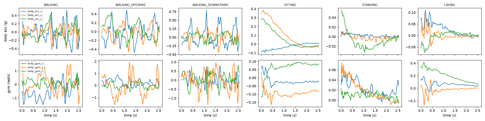
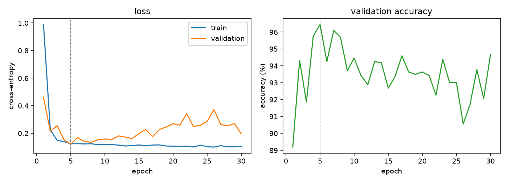
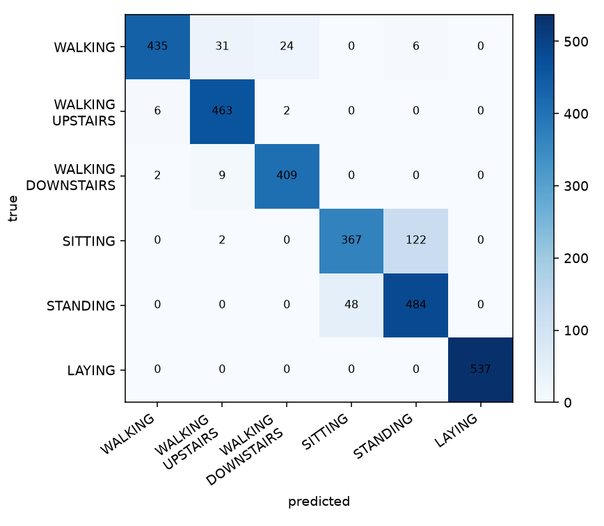
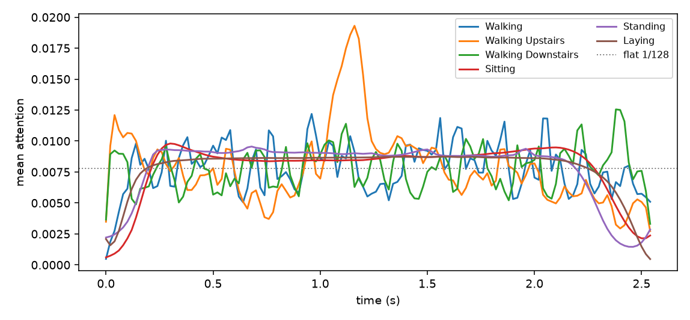

Recognize six human physical activities from a single 2.56-second sliding window (128 time steps at 50 Hz) captured by waist-worn smartphone sensors.
The 9 Raw Channels per time step (xt ∈ ℝ9):
body_acc_x/y/z: Linear body acceleration without gravity (g).body_gyro_x/y/z: Angular velocity around 3 axes (rad/s).total_acc_x/y/z: Raw acceleration including Earth's 1g gravity (g).
Moving vs. Still Dichotomy: Dynamic activities exhibit energetic, periodic wave trains (±0.5g) driven by cyclic foot strikes. Still activities show flat, quiescent lines near zero dynamic acceleration.
Adjacent windows overlap by 50% (1.28 s). Random window partitioning would leak identical temporal features across splits. To evaluate true out-of-sample generalization:
| Split | Subjects | Windows | Ratio |
|---|---|---|---|
| Train | 17 volunteers | 5,881 | 57.1% |
| Validation | 4 (3, 15, 25, 30) | 1,471 | 14.3% |
| Test | 9 volunteers | 2,947 | 28.6% |
Standardization computed strictly on training windows.
Assignment constraint: Zero black-box APIs (no nn.LSTM, nn.RNNCell, or nn.MultiheadAttention).
All recurrent layers built from gate equations:
Custom LSTM Cell: Unified parameter matrices W (4H×D), U (4H×H), b (4H):
Bidirectional LSTM: Forward pass (x₁ → x₁₂₈) and reversed backward pass (x₁₂₈ → x₁) concatenated:
Additive Bahdanau Attention Pooling:
Exact Hand Parameter Count (46,982):

Final test accuracy on held-out subjects: 91.45% Overall (2,695 / 2,947 correct).

| Activity | Accuracy | Mean Max α |
|---|---|---|
| WALKING | 87.70% | 0.2978 |
| UPSTAIRS | 98.30% | 0.2364 |
| DOWNSTAIRS | 97.38% | 0.2784 |
| SITTING | 74.75% | 0.0144 |
| STANDING | 90.98% | 0.0184 |
| LAYING | 100.00% | 0.0106 |

total_acc_x axis—an unmistakable static shift.infer.js)laibasan.github.io/human-activity-recognition/github.com/laibasan/human-activity-recognition